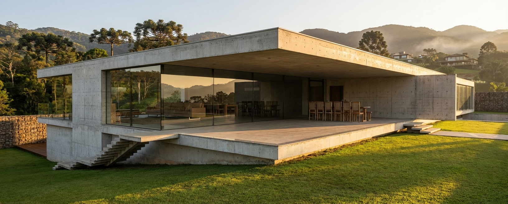
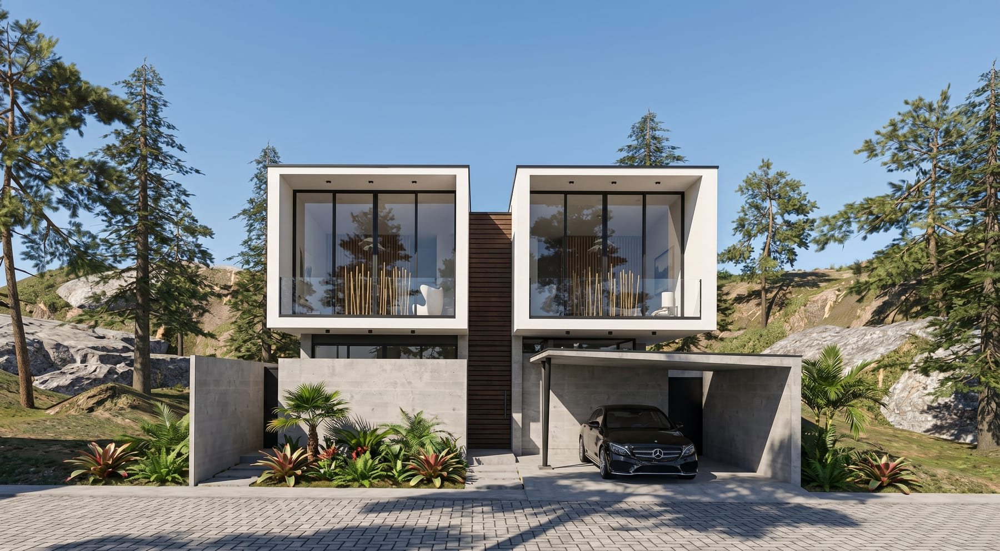
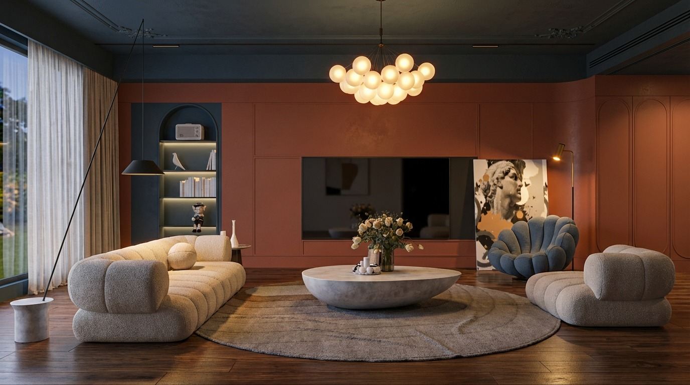
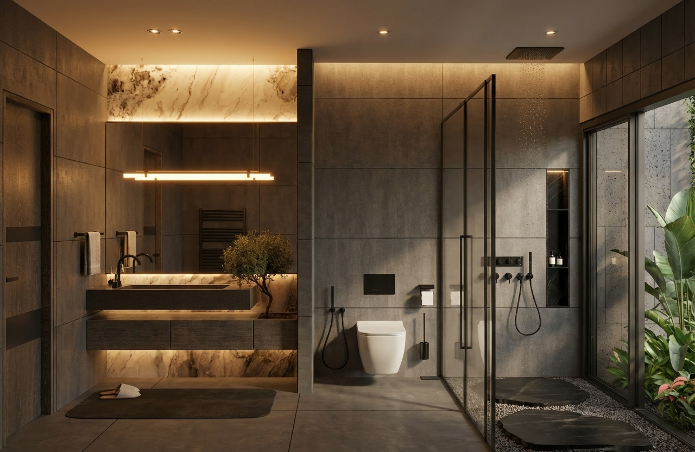

Residência Horizonte
1.240nodes

Vista Mestre
DNA do projeto
Estilo
Contemporâneo
Materiais
6 detectados
Paleta
5 cores
Contexto
Serra · Golden hour
Vistas geradas
DNA preservado em cada variação

Fachada
Sala de estar
Banheiro suíteNenhuma vista neste filtro ainda.